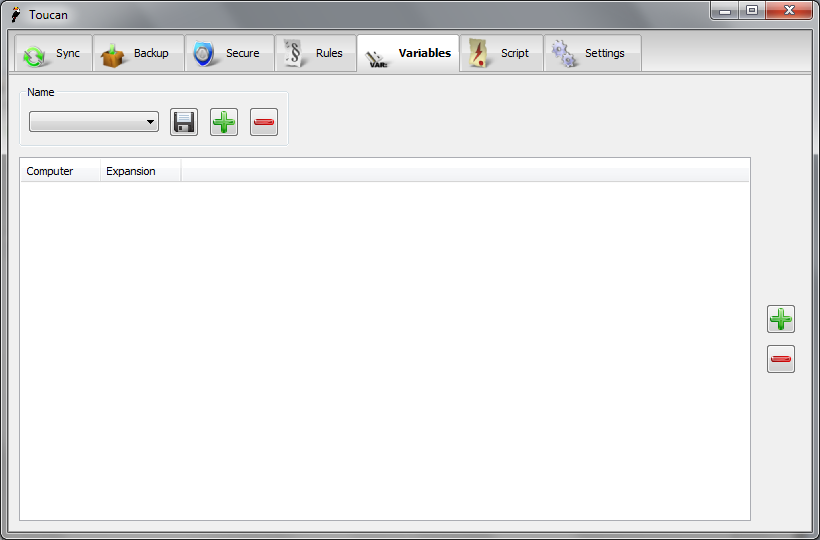

Variables¶
Overview¶
Variables are what allow Toucan to work portably across different
computers which, as of version 3, can even run different operating
systems. The easiest way to think of a variable is as a smart file or
folder path which changes based on the computer you are currently using.
Toucan has a number of built in Variables and you can create your own in
the GUI. Whether user created or built-in a variable can be used
anywhere Toucan expects a file or folder path, simply wrap the variable
name in @-signs, for example @docs@ or @myvar@. Variables can also be
nested, for example you can create a Variable that uses @drive@ within
it to get the current drive. There is no limit to the depth at which
they may be created although to ease understanding they should probably
be limited to two or three levels.
User Interface¶

The Variables interface is very simple. Variables can be saved, added and removed using the standard controls in the top left of the window. The rest of the window is taken up with a list that shows the various expansions of different variables on different machines. On the right hand side are buttons to allow you to add and remove these expansions.
Built-in Variables¶
The table below summarises the variables that are built in to Toucan.
Name |
Description |
|---|---|
date |
The current date in the format yyyy-mm-dd |
time |
The current time in the format hh-mm |
year (or YYYY) |
The year in its four digit form, i.e. 2009 |
month (or MM) |
The two digit month, i.e. June is 06 |
monthname |
The month name i.e. August |
monthshortname |
The short month name i.e. Aug |
day (or DD) |
The current day i.e. 23 |
dayname |
The day name, i.e. Monday |
dayshortname |
The short day name i.e. Mon |
hour (or hh) |
The current hour |
minute (or mm) |
The current minute |
dayofweek |
The weekday number in the range 1 - 7 where Monday is 1 |
weekofyear |
The current week number in the range 1 - 53 |
drive |
The drive letter that Toucan is being run from |
docs |
The current users documents folder |
volume |
The volume name of the drive Toucan is being run from |
label |
The label from an autorun.inf file, if it exists |
volumename |
The reverse of the volume variable, i.e. |